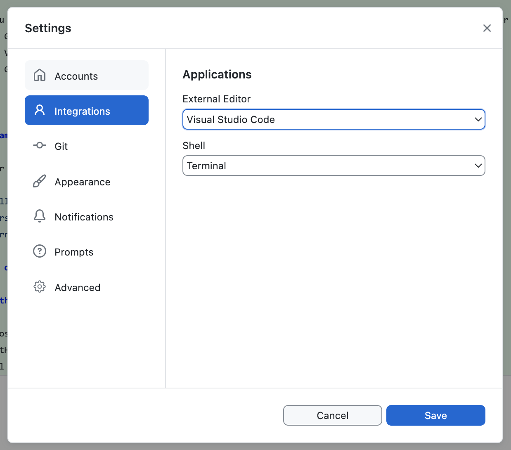

Lab 0: Setup
In this lab, we will prepare our local environment for the course labs and assignments. We recommend you follow this guide step by step, but if you are already familiar with some of the tools, feel free to skip ahead.
Table of contents
Browser: Latest Google Chrome
Ideally when making websites and web applications, we want to ensure they work correctly in all browsers, both new and (relatively) old. However, for the purposes of this class, we will only be using the latest version of Google Chrome. This is to streamline the process, and avoid spending time on issues that are out of scope for the learning objectives of the course.
If you don’t already have Google Chrome installed, please install it now. If you have it installed, please make sure you have the latest version by restarting it (it downloads updates automatically).
Code editor: Visual Studio Code (VS Code)
We will use Visual Studio Code as our code editor. A code editor is a program that allows us to write code in a text file and save it. In contrast with plain text editors (like Notepad on Windows or TextEdit on macOS), code editors provide features that make it easier to write code, such as syntax highlighting, code completion, and code formatting.
If you prefer another editor, feel free to use it, but we won’t be able to provide support for it.
Visual studio code also provides its own integrated terminal, so if you’re not familiar with running terminal commands on your computer, you can use the one built into VSCode. In the rest of this guide, if we say “open the terminal”, you can simply open the directory you want to start from (or any directory if that is not specified) with VS Code and press Ctrl + ` to open the integrated terminal (or via the menu: View → Terminal).
Emmet
Emmet is a snippet syntax that allows us to write certain web languages much faster. It is built into VSCode, so we don’t need to install anything. Just verify that it works by creating a new index.html file and typing ! followed by pressing the Tab key.
If it works, the ! should be replaced by something like:
<!DOCTYPE html>
<html lang="en">
<head>
<meta charset="UTF-8">
<meta name="viewport" content="width=device-width, initial-scale=1.0">
<title>Document</title>
</head>
<body>
</body>
</html>
Don’t worry about what this means right now, that’s what Lab 1 is for!
Git
Git is a version control system. It allows us to keep track of changes to our code over time, collaborate with others without having to worry about overwriting each other’s work, and revert back to previous versions of the code if needed.
)
Seems familiar? This is what version control frees you from! (Source: PhD Comics)
Setting up Git
The first step is to check if you already have git installed by opening the terminal and typing git --version.
- If you get an error about the command being unknown, you need to install Git on your computer.
- If you get a version number, you already have git installed. Make sure it’s up to date by comparing the version number you got with the one on the official website. If it’s significantly out of date, it’s a good practice to update it, covered at the end of the installation guide.
If you’ve never used git before, first you need to set up your name and email. Run the following commands to let git know your name and email address. Open a terminal and run:
git config --global user.name "Your Name"
git config --global user.email "your_email@mit.edu"
Git concepts: repo(sitory), staging area, commit
In Git, code is grouped in repositories (or repos for short), which are the root directories of a project. Repositories cannot be nested.
Git tracks changes via the concept of a commit, which is a set of changes to the code. By combining the commits from the start (the commit history) together, it can give us a snapshot of the code at any point in time.
A commit is performed in two steps:
- We tell Git which files we want to commit by adding them to the staging area through
git add. We can add multiple files at once, or one by one. - We tell Git to commit the files in the staging area through
git commit.
Let’s try it out!
Create a new folder on your computer (e.g. lab-0) and open it in VSCode. Then create a text file called hello.txt and write something in it. Then, open the built-in terminal in VS Code and type:
git init
Then press Enter. You should see something like:
Initialized empty Git repository in /Users/username/Documents/viz-society/lab-0/.git/
This means that Git has created a new repository in the current folder, but we have not yet committed anything. To see what the current status of the repository is, type:
git status
Which should give you something like:
On branch main
No commits yet
Untracked files:
(use "git add <file>..." to include in what will be committed)
hello.txt
nothing added to commit but untracked files present (use "git add" to track)
To add all the files in the current folder to the staging area, type:
git add .
The . means “the current folder” and is used very widely (similarly, .. means “the parent folder”).
Now, if we check the status again, we should see:
On branch main
No commits yet
Changes to be committed:
(use "git rm --cached <file>..." to unstage)
new file: hello.txt
This means that the file hello.txt is now in the staging area, and will be committed when we tell Git to do so. Let’s commit it:
git commit -m "Add hello.txt"
The -m flag means that we are providing a message for the commit inline. If we don’t provide it, Git will open a text editor for us to write the message in.
That’s it! We have now committed our first change to the repository. You can see recent changes via git log and even go back to a previous commit by using git checkout <commit hash> (the commit hash is the long string of letters and numbers that you see in the output of git log).
GitHub
GitHub is a website that allows us to store our code online and collaborate with others. Code is published in repositories, which are like folders that contain all the files of a project. Repositories can be public, which means anyone can see them, or private, which means only people with access can see them. In this class (and many others), we will be using GitHub repositories for your work during lab, as well as your assignments.
If you don’t already have a GitHub account, please create one now.
Please sign up for the GitHub Student Developer Pack to get access to a GitHub Pro account and many other useful tools for free. We will be using GitHub Pages to publish websites, which requires a paid account for private repos.
New Git concepts: Remote, pushing, and pulling
When we work on a project with others, we need a way to share our changes with them.
GitHub introduces the concept of a remote: That is, a remote repository that is set up to be a copy of our local repository. We can then push our commits to the remote, and pull commits from the remote to our local repository.

Diagram illustrating the Git & GitHub workflow. (Source: Git, GitHub, & Workflow Fundamentals on dev.to)
Helpful Git Resources
- A grip on git is a beautiful visual explanation of how git works from the inside out.
- Missing Semester Git Lecture is a great text explanation of how git works from the IAP class on developer tools.
- Learn Git Branching is a great online interactive tutorial for learning the git command line.
- GitHub Cheat Sheet This cheat sheet features the most important and commonly used Git commands for easy reference.
GitHub Desktop
Using Git via the command line is fine for the simplest case of committing and pushing all our changes at once and having no conflicts, but when we need more control or something goes wrong, it can be quite challenging to use.

Why we need a visual client for Git (Source: xkcd)
GitHub Desktop is a graphical user interface (GUI) for Git. It does not do everything that Git can do, but it does make many commonly needed tasks much easier, including:
- Reviewing uncommitted changes and only committing a subset of them (down to specific lines)
- Reverting commits
- Viewing the commit history
We strongly encourage installing GitHub Desktop (or any other visual client), even if you are comfortable with the command line, since it provides better visibility of status which can prevent many mistakes.
Once you install GitHub Desktop, you will need to connect it to your GitHub account. You should then go through the tutorial to create a repository. This will also guide you on how to push and pull from a remote repository.
You should also go to Settings > Integrations and set Visual Studio Code as your default editor.

This is all the setup needed for Lab 1! We will not need the rest of the tools until at least Lab 2 (and Svelte not until Lab 6), but we recommend you install them now so you don’t have to worry about it later.
Node.js and npm
As we will learn, JS (short for JavaScript) is the web’s programming language. Node.js is a program that allows us to use JS outside of the browser, in the same way as any other programming language, e.g. Python. npm is a package manager for JS, which allows us to install and use libraries (also called packages) written in JS. If you are familiar with Python, npm serves the same purpose as pip.
You may already have Node.js installed. To find out, open the terminal and type:
node --version
If you get an error, or if the version is way behind what you see on the official website, you need to install or update Node.js.
npm is included with every Node.js installation. You can verify that you have it installed by typing:
npm --version
If you update Node and npm, you may need to restart your terminal for these commands to show the correct version.
Installing a local server
While we can view web pages by simply opening them in a browser, that mode is heavily restricted for security reasons and many newer features will not work in it. To get around this, we will use a local server to serve our web pages.
Live Server is a VS Code extension that not only gives us a local server, it even takes care of refreshing the page for us when we make changes to the code!
Installation steps:
- Launch VS Code
- Quick Open (Ctrl+P) or (Command + P - on mac)
- Paste the following command, and press enter:
ext install ritwickdey.liveserver
Svelte for VS Code
Installation steps:
- Launch VS Code
- Quick Open (Ctrl+P) on Windows or (Cmd + P) on MacOS
- Paste the following command, and press enter:
ext install svelte.svelte-vscode - Confirm that you do want to install the extension